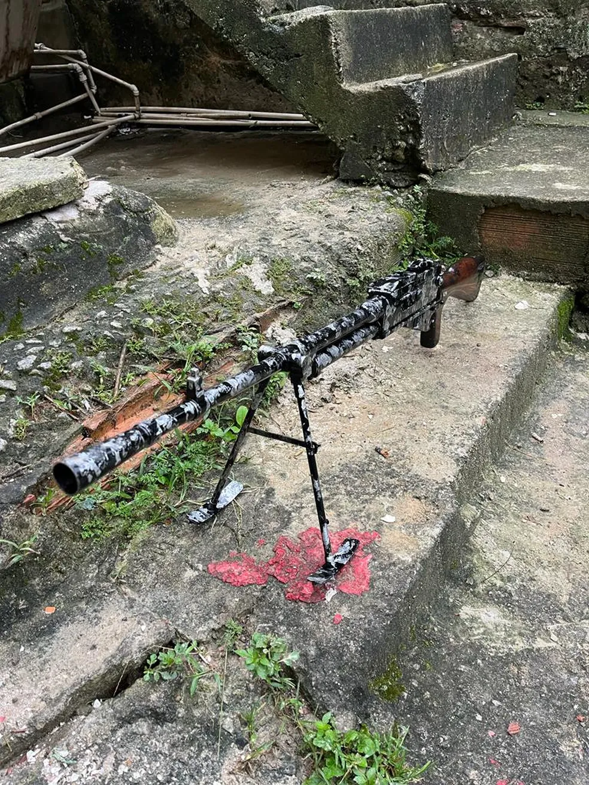

Arma é usada em zonas de guerra e tem alcance de 3 mil metros e 200 tiros por minuto. Ação visa prender criminosos que fugiram do Complexo da Maré e já resultou em dois suspeitos mortos. Agentes do Batalhão de Operações Especiais (Bope) e da Coordenadoria de Recursos Especiais (Core) apreenderam nesta terça-feira (3) uma metralhadora ponto 30 - arma usada em zonas de guerra, com alcance de 3 mil metros e 200 tiros por minuto -, foi apreendida durante operação no Complexo de São Carlos e no Morro da Coroa, na região Central do Rio. A ação tem como objetivo prender criminosos que teriam fugido do Complexo da Maré, na Zona Norte da cidade, como levantou o serviço de inteligência das polícias Civil e Militar. Além da ponto 30, policiais também recolheram duas pistolas, rádio comunicadores, drogas, carregadores e munições. Dois suspeitos morreram na ação. Segundo a polícia, eles estavam com pistolas e rádio transmissor. Ambos chegaram a ser socorridos para o Hospital Souza Aguiar, mas não resistiram aos ferimentos. Investigação Os agentes descobriram que bandidos começaram a se movimentar na noite desta segunda-feira (2), saindo da Vila do João em direção ao São Carlos e a Mineira, no Catumbi. No mês passado, o Fantástico exibiu, com exclusividade, o treinamento tático que bandidos que dominam a favela recebiam no interior do conjunto de favelas. Nesta segunda-feira (2), o ministro da Justiça e Segurança Pública, Flávio Dino, assinou uma portaria que autoriza a vinda de 300 agentes federais para a capital fluminense. Os agentes da Força Nacional serão responsáveis por vigiar as entradas do Complexo da Maré e as Polícias Militar e Civil farão operações diárias na comunidade na tentativa de cumprir dezenas de mandados de prisão em aberto. O treinamento A Polícia Civil mapeou quem são os criminosos que controlam a área onde foi criado um centro de treinamento do crime no Complexo da Maré, na Zona Norte do Rio de Janeiro. No domingo (24), o Fantástico exibiu o resultado de uma investigação que durou dois anos sobre o “curso prático de táticas de guerrilha”.
Polícia apreende metralhadora ponto 30, arma usada em zona de guerra, durante operação no São Carlos, no Rio
